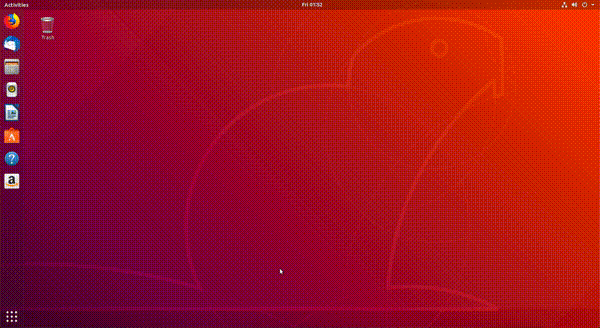
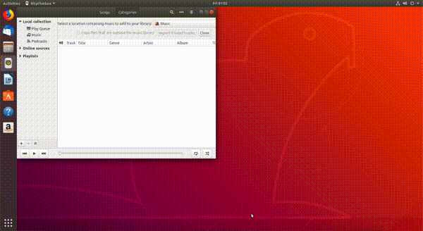
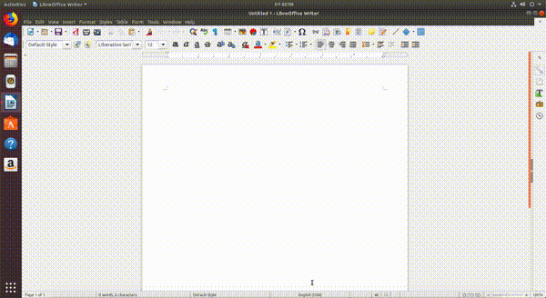
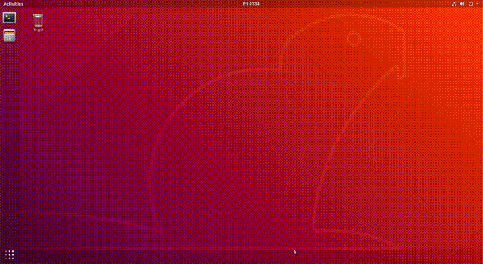

Aplicațiile sunt pornite de utilizator sau de sistem.
Utilizatorul pornește aplicațiile pentru că are o nevoie pe care aplicația o rezolvă.
De exemplu, pornește un browser web pentru a accesa Wikipedia, sau pornește aplicația Spotify pentru a asculta muzică.
Sistemul pornește aplicații (fără intervenția utilizatorului) pentru a asigura buna funcționare a sistemului.
De exemplu, sistemul pornește un client DHCP pentru a obține automat parametrii de rețea care asigură conexiunea la Internet; sau pornește o aplicație care sincronizează data sistemului cu data indicată de un server din Internet.
Utilizatorul poate porni aplicațiile folosind interfața grafică (Graphical User Interface, GUI) sau interfața în linia de comandă (Command Line Interface, CLI).
În cazul interfeței grafice, pornirea se face folosind elementele grafice (mouse, meniuri, iconuri de desktop).
În cazul interfeței în linia de comandă, pornirea se face introducând și rulând comenzi.
Vorbim despre pornirea aplicațiilor din terminal în capitolul Instalareașiutilizareaaplicațiilor.
În această secțiune vorbim despre pornirea și oprirea aplicațiilor.
Instalarea aplicațiilor noi este acoperită în capitolul Instalareașiutilizareaaplicațiilor.
1.1. Pornirea unei aplicații grafice folosind iconuri¶
Cel mai simplu mod de a porni o aplicație grafică este folosind iconuri.
Folosim mouse-ul și facem click pe icon și pornim aplicația.
De exemplu, în Ubuntu 18.04, pentru a porni aplicația Rhythmbox, folosim iconul din bara de jos în stânga, la fel ca în imaginea de mai jos:

După un click pe icon, aplicația va porni și o putem folosi.
Spunem că acum aplicația rulează.
Rularea înseamnă că aplicația folosește resursele sistemului pentru a îndeplini nevoile utilizatorului sau sistemului.
În mod similar pornim alte aplicații care au iconuri.
Aceste iconuri pot fi prezente pe bare de iconuri sau în diferite meniuri, depinzând de mediul grafic și distribuția folosită.
Odată pornită, o aplicație grafică rulează, de obicei, până la o oprire explicită din partea utilizatorului.
Utilizatorul poate opri o aplicație grafică în mai multe moduri:
Folosind butonul de închidere a ferestrei grafice, în general în forma unui simbol x, ca în imaginea de mai jos:

Folosind combinația de taste Alt+F4, care închide fereastra grafică, o scurtătură pentru folosirea butonului de închidere.
Folosind intrarea de tip Quit / Close / Exit din meniul grafic al aplicației, ca în imaginea de mai jos, specifică aplicației LibreOffice:

Folosind o combinație de taste care este asociată intrării din meniul grafic al aplicației.
În imaginea de mai sus, specifică LibreOffice, combinația de taste este Ctrl+q.
Această combinație de taste depinde de aplicație, spre deosebire combinației de taste Alt+F4, care se aplică tuturor aplicațiilor grafice.
Folosind utilitarul xkill.
După ce pornim utilitarul xkill, cursorul mouse-ului capătă o formă de x.
Un click pe o aplicație grafică duce la omorârea acelei aplicații.
Exercițiu: Porniți aplicația Thunderbird Mail și opriți-o în toate modurile de mai sus.
1.3. Pornirea unei aplicații grafice folosind Alt+F2¶
Pentru a porni o aplicație grafică folosind iconuri trebuie să existe acele iconuri.
Dacă iconul nu este prezent, sau dacă este greu accesibil (trebuie să căutăm prin meniuri), preferăm o altă soluție.
Soluția este folosirea unui mod generic de a lansa o aplicație în interfața grafică, adică folosirea unui prompt de tip application launcher.
În mediile grafice Linux pornim un prompt de tip application launcher folosind combinația de taste Alt+F21.
Când apăsăm Alt+F2, mediul grafic prezintă un prompt în care introducem șirul care identifică aplicația.
De exemplu, pentru a porni aplicația Rhythmbox, introducem șirul rhythmbox în prompt, ca în figura de mai jos:

În urma introducerii șirului rhythmbox în prompt, urmat de apăsarea tastei Enter, aplicația Rhythmbox va porni.
În mod similar, dacă dorim să pornim o aplicație de tip terminal (GNOME Terminal), folosim Alt+F2 și introducem șirul gnome-terminal2.
Șirurile rhythmbox și gnome-terminal sunt șiruri identifică aplicațiile Rhythmbox, respectiv GNOME Terminal.
Numim un astfel de șir o comandă; comenzile sunt șiruri introduse de utilizator pentru a porni o anumită aplicație.
Funcționalitatea de tip application launcher, pornită folosind Alt+F2, se găsește și în alte sisteme de operare, nu doar în Linux.
În Windows, pornim un prompt de tip application launcher folosind combinația de taste Windows+r.
În macOS folosim Command+Space.
Aplicația GNOME Terminal, pornită folosind comanda gnome-terminal, este aplicația de tip terminal specifică mediului GNOME.
Alte medii pot folosi alte aplicații de tip terminal.
De exemplu, aplicația de tip terminal pe mediul KDE este Konsole.
Sau utilizatorul poate decide instalarea unei alte aplicații de tip terminal, precum Terminator.